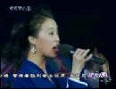

盧婧在年赛闪亮登场《WILD DANCE》极具冲击力，比周赛月赛强出许多。
祝贺卢婧获得2008年《星光大道》第二月月赛冠军！
盧婧在首张全新原創CD专辑《盧婧Jane》发行演唱会上, 接受多倫多CTTV 華人網絡電視訪問。
盧婧首张全新原創CD专辑《盧婧Jane》由Cory Noziglia監製。《盧婧Jane》專輯里突出了加拿大多元文化的特色, 在編曲方面融入了許多不同族裔的演奏風格, 而且還非常有幸的請到了多位非常有才華的音樂人的參與。
這些音樂人分別來自多倫多有名的音樂學府, 有些還曾經幫過北美的巨星如Christina Aguilera, 演奏。《盧婧Jane》專輯的樂器都是現場演奏錄製, 包括所有弦樂都是由專業string quartet現場演繹, 他們的加入讓這張專輯更加的專業化。
一首《呛声》,卢婧成功10进5。2006年11月15日，在万众瞩目的《中华首届闽南语歌曲创作演唱大赛》上，来自加拿大的女歌手卢婧, 激情四射, 劲歌热舞, 以一首自己作詞作曲《Lets Party Now》一举夺得季军！ 主持人吴宗宪盛赞歌手的演唱是“金声玉韵、天籁之音”。中华首届闽南语歌曲创作演唱大赛由福建省委宣传部、中国音乐家协会、福建省台办、 福建省广播影视集团和晋江市委市政府共同主办, 共设福州、厦门、漳州、泉州以及北京、台北、多伦多、洛杉机、新加坡、吉隆坡等10几个分赛区。
2001年10月13日，15岁的卢婧在赢得《新秀歌唱大赛多伦多选拔赛》冠军后, 代表多伦多参加在中国广东省举行的《2001年全球华人新秀歌唱大赛》， 以一曲热情奔放的《听海》脱颖而出，夺得季军。由于歌唱大赛通过广东卫视向海内外现场直播，卢婧也就一夜之间成为海内外华人心中的“明星”。
盧婧一袭紫色晚装出场，自己填词的《张开怀抱》演唱深情投入，台风舒展自如，发散着无穷魅力。

祝贺卢婧获得2008年《星光大道》周赛冠军！
盧婧在首张全新原創CD专辑《盧婧Jane》发行演唱会上, 接受多倫多CTTV 華人網絡電視訪問。
2007年4月20日, 在台湾台中大甲露天体育场举行的最盛大《妈祖之光·相约东南》大型综艺电视晚会上，来自加拿大的女歌手卢婧与两岸天王、天后级歌 手蔡依林、 罗大佑、SHE、潘玮珀、杨丞琳等共15位歌手同台演唱，表演火爆, 引起轰动。 晚会吸引了5万多名观众涌向现场，并通过福建海峡电视台、 福建电视台东南卫视、台湾东森电视台、中天电视台、年代电视台向全球卫星直播或实况录播，台湾岛内丰盟、西海岸、大屯、 威达等四家有线电视台也同步向当地逾200万户民众进行转播。
一曲《心事谁人知》很有感情, 歌声令人動容,縈繞於懷,久久難忘。2006年11月15日，在万众瞩目的《中华首届闽南语歌曲创作演唱大赛》上，来自加拿大的女歌手卢婧, 激情四射, 劲歌热舞, 以一首自己作詞作曲《Lets Party Now》一举夺得季军！ 主持人吴宗宪盛赞歌手的演唱是“金声玉韵、天籁之音”。中华首届闽南语歌曲创作演唱大赛由福建省委宣传部、中国音乐家协会、福建省台办、 福建省广播影视集团和晋江市共同主办, 共设福州、厦门、漳州、泉州以及北京、台北、多伦多、洛杉机、新加坡、吉隆坡等10几个分赛区。
卢婧 Hip Hop 舞蹈自然, 隨意, 節奏感強,在中國非常受歡迎, 人氣極高。Wonderful Hip Hop Dance Clip.